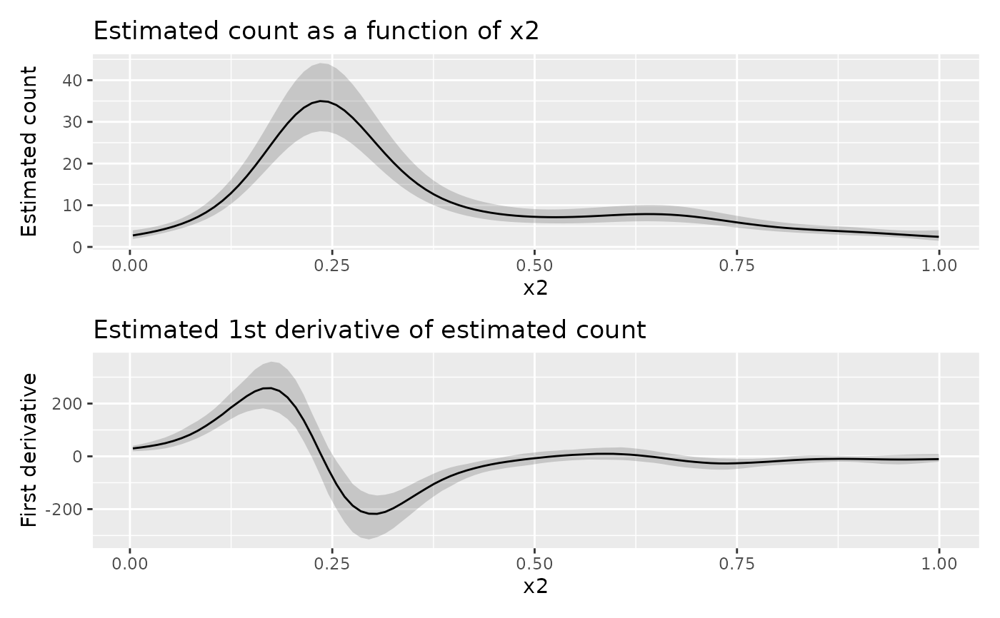

Derivatives on the response scale from an estimated GAM
Source:R/derivatives.R
response_derivatives.RdDerivatives on the response scale from an estimated GAM
Usage
response_derivatives(object, ...)
# S3 method for default
response_derivatives(object, ...)
# S3 method for gamm
response_derivatives(object, ...)
# S3 method for gam
response_derivatives(
object,
focal = NULL,
data = NULL,
order = 1L,
type = c("forward", "backward", "central"),
scale = c("response", "linear_predictor"),
method = c("gaussian", "mh", "inla", "user"),
n = 100,
eps = 1e-07,
n_sim = 10000,
level = 0.95,
seed = NULL,
mvn_method = c("mvnfast", "mgcv"),
...
)Arguments
- object
an R object to compute derivatives for.
- ...
arguments passed to other methods and on to
fitted_samples()- focal
character; name of the focal variable. The response derivative of the response with respect to this variable will be returned. All other variables involved in the model will be held at constant values. This can be missing if supplying
data, in which case, the focal variable will be identified as the one variable that is not constant.- data
a data frame containing the values of the model covariates at which to evaluate the first derivatives of the smooths. If supplied, all but one variable must be held at a constant value.
- order
numeric; the order of derivative.
- type
character; the type of finite difference used. One of
"forward","backward", or"central".- scale
character; should the derivative be estimated on the response or the linear predictor (link) scale? One of
"response"(the default), or"linear predictor".- method
character; which method should be used to draw samples from the posterior distribution.
"gaussian"uses a Gaussian (Laplace) approximation to the posterior."mh"uses a Metropolis Hastings sample that alternates t proposals with proposals based on a shrunken version of the posterior covariance matrix."inla"uses a variant of Integrated Nested Laplace Approximation due to Wood (2019), (currently not implemented)."user"allows for user-supplied posterior draws (currently not implemented).- n
numeric; the number of points to evaluate the derivative at (if
datais not supplied).- eps
numeric; the finite difference.
- n_sim
integer; the number of simulations used in computing the simultaneous intervals.
- level
numeric;
0 < level < 1; the coverage level of the credible interval. The default is0.95for a 95% interval.- seed
numeric; a random seed for the simulations.
- mvn_method
character; one of
"mvnfast"or"mgcv". The default is usesmvnfast::rmvn(), which can be considerably faster at generate large numbers of MVN random values thanmgcv::rmvn(), but which might not work for some marginal fits, such as those where the covariance matrix is close to singular.
Value
A tibble, currently with the following variables:
.row: integer, indexing the row ofdataeach row in the output represents.focal: the name of the variable for which the partial derivative was evaluated,.derivative: the estimated partial derivative,.lower_ci: the lower bound of the confidence or simultaneous interval,.upper_ci: the upper bound of the confidence or simultaneous interval,additional columns containing the covariate values at which the derivative was evaluated.
Examples
library("ggplot2")
library("patchwork")
load_mgcv()
# \dontshow{
op <- options(pillar.sigfig = 3, cli.unicode = FALSE)
# }
df <- data_sim("eg1", dist = "negbin", scale = 0.25, seed = 42)
# fit the GAM (note: for execution time reasons using bam())
m <- bam(y ~ s(x0) + s(x1) + s(x2) + s(x3),
data = df, family = nb(), method = "fREML"
)
# data slice through data along x2 - all other covariates will be set to
# typical values (value closest to median)
ds <- data_slice(m, x2 = evenly(x2, n = 100))
# fitted values along x2
fv <- fitted_values(m, data = ds)
# response derivatives - ideally n_sim = >10000
y_d <- response_derivatives(m,
data = ds, type = "central", focal = "x2",
eps = 0.01, seed = 21, n_sim = 1000
)
# draw fitted values along x2
p1 <- fv |>
ggplot(aes(x = x2, y = .fitted)) +
geom_ribbon(aes(ymin = .lower_ci, ymax = .upper_ci, y = NULL),
alpha = 0.2
) +
geom_line() +
labs(
title = "Estimated count as a function of x2",
y = "Estimated count"
)
# draw response derivatives
p2 <- y_d |>
ggplot(aes(x = x2, y = .derivative)) +
geom_ribbon(aes(ymin = .lower_ci, ymax = .upper_ci), alpha = 0.2) +
geom_line() +
labs(
title = "Estimated 1st derivative of estimated count",
y = "First derivative"
)
# draw both panels
p1 + p2 + plot_layout(nrow = 2)

# \dontshow{
options(op)
# }